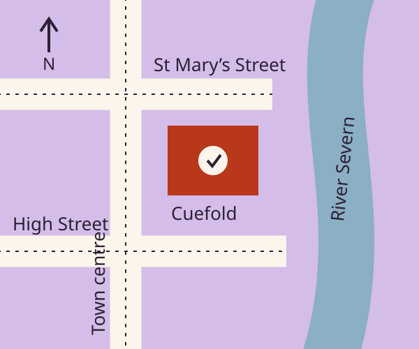

On foot & by bicycle
We’re in the High Town, a short walk from High Street. St Mary’s Street has a gentle slope. Bicycle parking is available in the courtyard; bring your own lock.
07 / Find us
An easy welcome on St Mary’s Street. Arrive a little early for a drink, find your seat and settle into the evening.

An orientation sketch, not a navigation map. Check your route before travelling.
Your destination
Before the lights go down
We’re in the High Town, a short walk from High Street. St Mary’s Street has a gentle slope. Bicycle parking is available in the courtyard; bring your own lock.
Town bus stops are around High Street. Public car parks are signposted from the approach roads. There is no audience car park on site; allow time for the walk through town.
Ask the box office about the nearest suitable drop-off point before you travel. The main entrance, foyer and both performance spaces are step-free.
Your evening, timed well
Choose a curtain time and your journey length. We’ll work backwards, with a little room for finding the door and settling in.
The foyer serves tea, coffee, soft drinks and a small selection of bottled drinks. There are sweet and savoury snacks, but no full kitchen. You’re welcome to bring a refillable water bottle.
Call the box office as soon as you can. Late entry depends on the production and may mean waiting for a suitable pause. Ticket changes are subject to availability; please ask us before travelling.